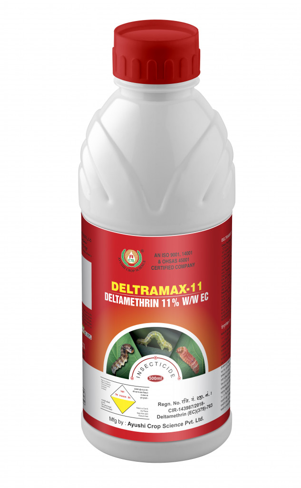

Technical Name: Deltamethrin 11% EC
Mode of Action: DELTRAMAX-11 is a non-systemic insecticide that acts on the nervous system of insects through both contact and ingestion. It provides broad-spectrum control of chewing and sucking pests, causing paralysis and death. As a synthetic pyrethroid, it is photo-stable and remains effective even in sunlight.
Major Crops: Rice, Sugarcane, Cotton, Vegetables, Fruits
Target Pest: Bollworms, Fruit Borers, Leaf Folders, Stem Borers, Whorl Maggots, Green Leaf Hoppers
Presentation Available: 250 ml, 500 ml, 1 L
Company: Ayushi